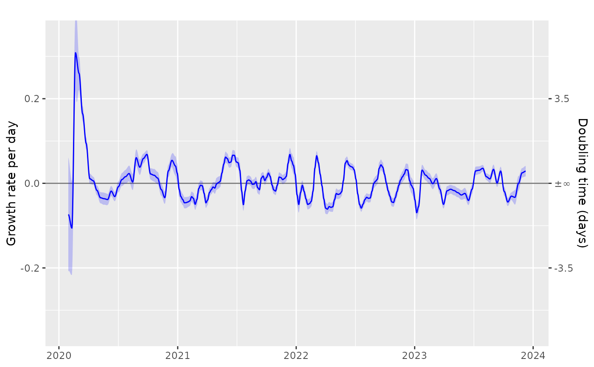

Growth rate timeseries diagram
Usage
plot_growth_rate(
modelled = i_timeseries,
...,
mapping = if (interfacer::is_col_present(modelled, class)) ggplot2::aes(colour = class)
else ggplot2::aes(),
events = i_events
)Arguments
- modelled
Either:
A dataframe containing the following columns:
time (as.time_period + group_unique) - A (usually complete) set of singular observations per unit time as a
time_periodincidence.fit (double) - an estimate of the incidence rate on a log scale
incidence.se.fit (double) - the standard error of the incidence rate estimate on a log scale
incidence.0.025 (positive_double) - lower confidence limit of the incidence rate (true scale)
incidence.0.5 (positive_double) - median estimate of the incidence rate (true scale)
incidence.0.975 (positive_double) - upper confidence limit of the incidence rate (true scale)
growth.fit (double) - an estimate of the growth rate
growth.se.fit (double) - the standard error the growth rate
growth.0.025 (double) - lower confidence limit of the growth rate
growth.0.5 (double) - median estimate of the growth rate
growth.0.975 (double) - upper confidence limit of the growth rate
No mandatory groupings.
No default value.
OR:
A dataframe containing the following columns:
time (as.time_period + group_unique) - A (usually complete) set of singular observations per unit time as a
time_periodproportion.fit (double) - an estimate of the proportion on a logit scale
proportion.se.fit (double) - the standard error of proportion estimate on a logit scale
proportion.0.025 (proportion) - lower confidence limit of proportion (true scale)
proportion.0.5 (proportion) - median estimate of proportion (true scale)
proportion.0.975 (proportion) - upper confidence limit of proportion (true scale)
relative.growth.fit (double) - an estimate of the relative growth rate
relative.growth.se.fit (double) - the standard error the relative growth rate
relative.growth.0.025 (double) - lower confidence limit of the relative growth rate
relative.growth.0.5 (double) - median estimate of the relative growth rate
relative.growth.0.975 (double) - upper confidence limit of the relative growth rate
No mandatory groupings.
No default value.
- ...
Arguments passed on to
geom_events- mapping
a
ggplot2::aesmapping. Most importantly setting thecolourto something if there are multiple incidence time series in the plot- events
Significant events or time spans
A dataframe containing the following columns:
label (character) - the event label
start (date) - the start date, or the date of the event
end (date) - the end date or NA if a single event
No mandatory groupings.
A default value is defined.
Examples
# example code
tmp = growthrates::england_covid %>%
time_aggregate(count=sum(count))
tmp_pop = growthrates::england_demographics %>%
dplyr::ungroup() %>%
dplyr::summarise(population = sum(population))
# If the incidence is normalised by population
tmp2 = tmp %>%
poisson_locfit_model() %>%
normalise_incidence(tmp_pop)
plot_growth_rate(tmp2,colour="blue")

tmp3 = growthrates::england_covid %>%
proportion_locfit_model()
# Default pdf device doesn't support unicode
if (FALSE) {
plot_growth_rate(tmp3)
}